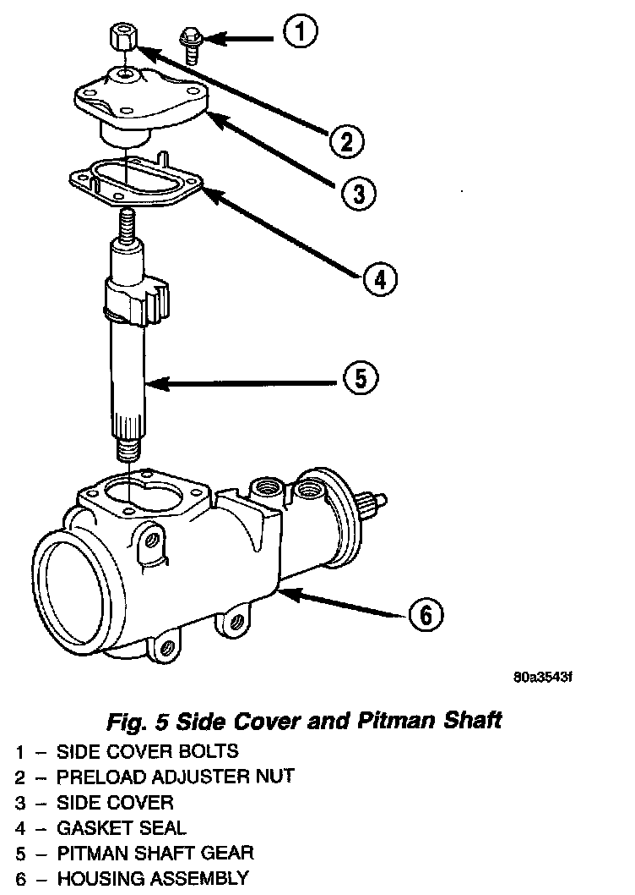

Pitman Shaft Replacement
Fig. 5:

NOTE: Steering gear must be removed from the vehicle for this procedure.
REMOVAL
1. Clean exposed end of pitman shaft and housing with a wire brush.
2. Remove preload adjuster nut.
3. Rotate stub shaft with socket to center gear.
4. Remove side cover bolts and remove side cover, gasket and pitman shaft as an assembly.
5. Remove pitman shaft from the side cover.
INSTALLATION
1. Install pitman shaft to side cover by screwing shaft in until it fully seats to side cover.
2. Install preload adjuster nut. Do not tighten nut until after pitman shaft adjustment has been made.
3. Install gasket to side cover and bend tabs around edges of side cover.
4. Install pitman shaft assembly and side cover to housing.
5. Install side cover bolts and tighten to 60 Nm (44 ft. lbs.).
6. Adjust pitman shaft, refer to Over-Center Adjustment.